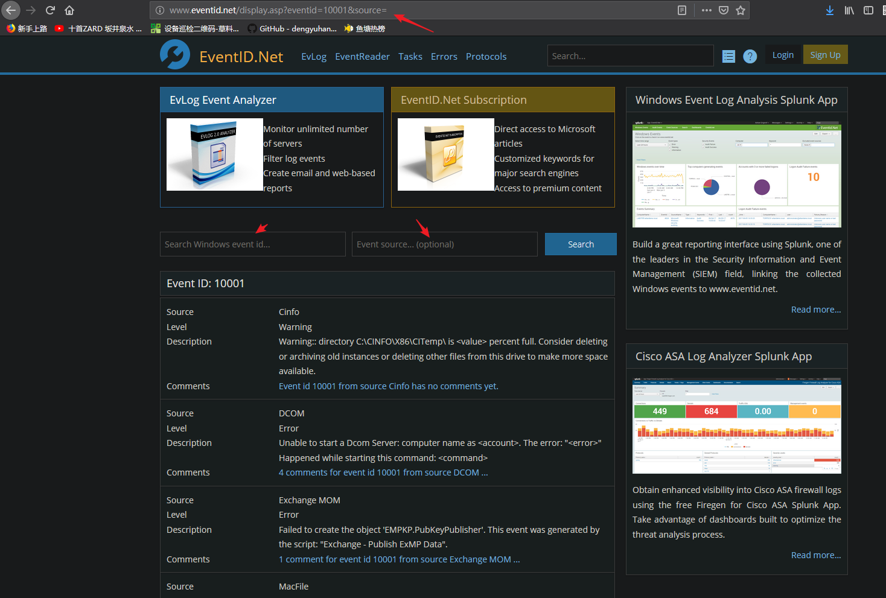

Windows日志笔记
Windows日志包括应用程序、安全、系统等几个部分，它的存放路径是“%systemroot%system32config”，应用程序日志、安全日志和系统日志对应的文件名为AppEvent.evt、SecEvent.evt和SysEvent.evt。这些文件受到“Event Log（事件记录）”服务的保护不能被删除，但可以被清空。
查看日志文件
打开【事件查看器】即可
保护日志文件
更改路径
Windows日志文件默认路径是“%systemroot%system32config”，我们可以通过修改注册表来改变它的存储目录，来增强对日志的保护。
点击“开始→运行”，在对话框中输入“Regedit”，回车后弹出注册表编辑器，依次展开
HKEY_LOCAL_MACHINE/SYSTEM/CurrentControlSet/Services/Eventlog
后，下面的
Application 应用程序日志(Application.evtx)
Security 安全日志(Security.evtx)
System 系统日志(System.evtx)
其他
Microsoft Office Alerts 微软Office应用程序 OAerts.evtx
Windows PowerShell Windows PowerShell.evtx
Internet Explorer Internet Explorer.evtx
笔者以应用程序日志为例，将其转移到“d:\cce”目录下。选中Application子项,在右栏中找到File键，其键值为应用程序日志文件的路径“%SystemRoot%\system32config\AppEvent.Evt”，将它修改为“d:\cce\AppEvent.Evt”。接着在D 盘新建“CCE”目录，将“AppEvent.Evt”拷贝到该目录下，重新启动系统，完成应用程序日志文件存放目录的修改。其它类型日志文件路径修改方法相同，只是在不同的子项下操作
修改日志文件的权限
在文件属性对话框的安全选项
取消“允许将来自父系的可继承权限传播给该对象”选项勾选
“Everyone”账号，只赋予“只读”权限
添加“system”账号，赋予“完全控制”权限
日志详情
每个记录事件的数据结构中包含了9个元素（可以理解成数据库中的字段）：
日期/时间
事件类型
用户
计算机
事件ID
来源
类别
描述
数据等信息
系统内置的三个核心日志文件（System，Security和Application）默认大小均为20480KB（20MB），记录事件数据超过20MB时，默认系统将优先覆盖过期的日志记录。其它应用程序及服务日志默认最大为1024KB，超过最大限制也优先覆盖过期的日志记录。
Windows事件日志中共有五种事件类型，所有的事件必须拥有五种事件类型中的一种，且只可以有一种。五种事件类型分为：
- 信息（Information）
信息事件指应用程序、驱动程序或服务的成功操作的事件。
- 警告（Warning）
警告事件指不是直接的、主要的，但是会导致将来问题发生的问题。例如，当磁盘空间不足或未找到打印机时，都会记录一个“警告”事件。
- 错误（Error）
错误事件指用户应该知道的重要的问题。错误事件通常指功能和数据的丢失。例如,如果一个服务不能作为系统引导被加载，那么它会产生一个错误事件。
- 成功审核（Success audit）
成功的审核安全访问尝试，主要是指安全性日志，这里记录着用户登录/注销、对象访问、特权使用、账户管理、策略更改、详细跟踪、目录服务访问、账户登录等事件，例如所有的成功登录系统都会被记录为“ 成功审核”事件。
- 失败审核（Failure audit）
失败的审核安全登录尝试，例如用户试图访问网络驱动器失败，则该尝试会被作为失败审核事件记录下来。
日志分析实例
- 在Windows系统中，我们可以通过事件查看器的系统日志查看计算机的开、关机记录，这是因为日志服务会随计算机一起启动或关闭，并在日志中留下记录。这里我们要介绍两个事件ID“6006和6005”。6005表示事件日志服务已启动，如果在事件查看器中发现某日的事件ID号为6005的事件，就说明在这天正常启动了Windows系统。6006表示事件日志服务已停止，如果没有在事件查看器中发现某日的事件ID号为6006的事件，就表示计算机在这天没有正常关机，可能是因为系统原因或者直接切断电源导致没有执行正常的关机操作。
删除日志
Windwos操作系统默认没有提供删除特定日志记录的功能，仅提供了删除所有日志的操作功能。也就意味着日志记录ID（Event Record ID）应该是连续的，默认的排序方式应该是从大到小往下排列。
辅助工具
这个网站可以查相应id的日志的介绍

可是EVENTID.NET上有的信息要付费注册用户才能看，怎么办呢：）
查EVENTID.NET可以按以下方法来查
[url]http://www.eventid.net/display.asp?eventid=xxxx&source=yyyy[/url]
xxxx即事件ID
yyyy即事件来源
引伸阅读
日志攻击